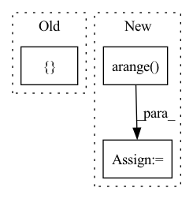

Pattern ID :2567
Before Change
// masked by the missing entries
// note, different batch may contain different number of real entities
tensor_list = []
for i, batch in enumerate(out):
mean_entity = 0.
real_number = real_number_tensor[i]
After Change
print("entity_num:", entity_num) if debug else None
// generate the mask for transformer
mask = torch.arange( 0, self.max_entities) .float()
mask = mask.repeat(batch_size, 1)
mask = mask < entity_num.unsqueeze(dim=1)
In pattern: SUPERPATTERN
Frequency: 3
Non-data size: 3
Instances Fragment ID: 8366006
Project Name: liuruoze/mini-alphastar
Commit Name: 612d42a7bf5ef827e1e919198d839fce106155cd
Time: 2021-11-25
Author: liuruoze@163.com
File Name: alphastarmini/core/arch/entity_encoder.py
M Class Name: EntityEncoder
N Class Name: EntityEncoder
M Method Name: forward(3)
N Method Name: forward(2)
M Parent Class: nn.Module
N Parent Class: nn.Module
M File Name: alphastarmini/core/arch/entity_encoder.py
N File Name: alphastarmini/core/arch/entity_encoder.py
M Start Line: 721
M End Line: 758
N Start Line: 716
N End Line: 778
Before Change
prob = F.softmax(logits, dim=-1)
log_prob = F.log_softmax(logits, dim=-1)
uncertain = torch.sum(prob * log_prob, 1) / (-torch.log(self.num_class))
uncertain_infos.append([ uncertain, probAfter Change
// positions will keep track of the original position of each element in the
// batch when elements will be removed
final_probs = torch.zeros((hidden_states[0].shape[0], 2), device=device)
positions = torch.arange(start=0, end=hidden_states[0].shape[0], device=device) .long()
for i, (layer_module, (k, layer_classifier_module)) in enumerate(
zip(self.layer, self.layer_classifiers.items())): Fragment ID: 8365996
Project Name: julesbelveze/bert-squeeze
Commit Name: 3cb14b8f1e742b86fe609843f2779e3bb36de4aa
Time: 2021-12-11
Author: 32683010+JulesBelveze@users.noreply.github.com
File Name: bert-squeeze/models/custom_transformers/fastbert.py
M Class Name: FastBertGraph
N Class Name: FastBertGraph
M Method Name: forward(7)
N Method Name: forward(6)
M Parent Class: nn.Module
N Parent Class: nn.Module
M File Name: bert-squeeze/models/custom_transformers/fastbert.py
N File Name: bert-squeeze/models/custom_transformers/fastbert.py
M Start Line: 57
M End Line: 70
N Start Line: 49
N End Line: 87
Before Change
avg_target = target.mean(dim=3)
channel_bins = torch.tensor([ 0.333, 0.666, 1.0After Change
avg_target = target.mean(dim=3)
bin_size = self.max_pixel_val / self.output_channel_bits
channel_bins = torch.arange( bin_size, self.max_pixel_val, bin_size)
discretized_target = torch.bucketize(avg_target, channel_bins)
discretized_target = F.one_hot(discretized_target,
self.output_channel_bits)
c, bi = self.channels, self.output_channel_bits Fragment ID: 8365989
Project Name: lucidrains/vit-pytorch
Commit Name: fc14561de74531333efc32a1fe9709dbda0f7898
Time: 2021-02-13
Author: zackankner@gmail.com
File Name: vit_pytorch/mpp_pytorch.py
M Class Name: MPPLoss
N Class Name: MPPLoss
M Method Name: forward(4)
N Method Name: forward(4)
M Parent Class: nn.Module
N Parent Class: nn.Module
M File Name: vit_pytorch/mpp_pytorch.py
N File Name: vit_pytorch/mpp_pytorch.py
M Start Line: 43
M End Line: 43
N Start Line: 52
N End Line: 53